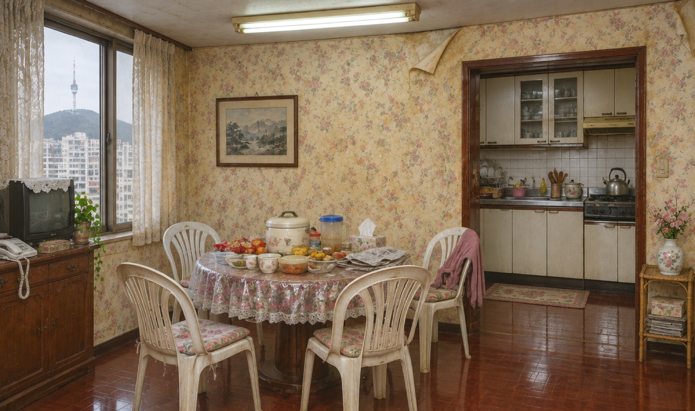
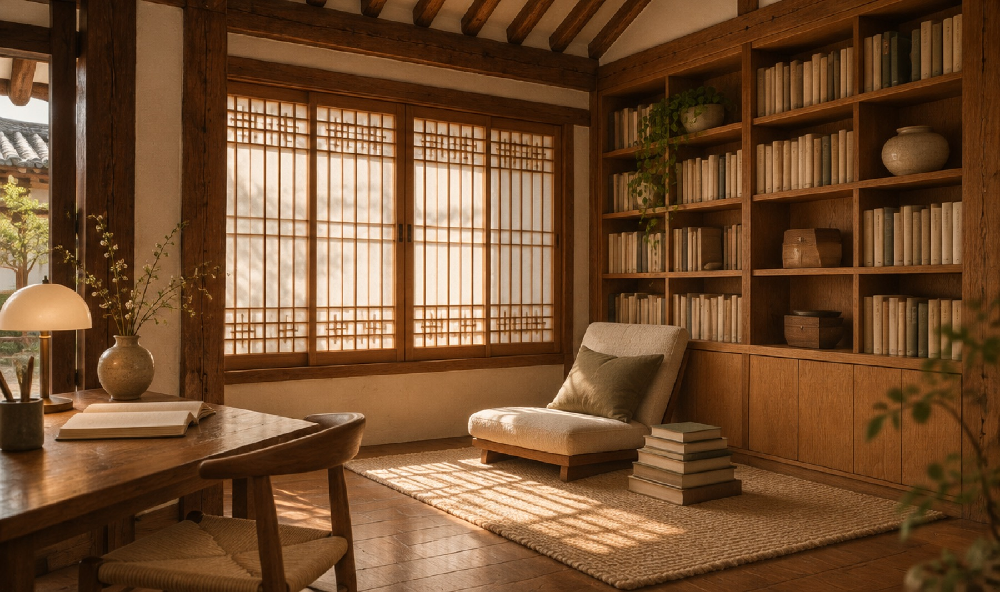

집은 모서리에서 완성됩니다
걸레받이가 벽과 만나는 선, 문틀이 바닥에 닿는 1mm.
아무도 보지 않는 곳까지 목수가 직접 맞춥니다.
내려보면 블라인드가 닫혀요
성수동 작업실 · 2014년부터
0집
2014년부터 고친 집. 그중 절반은 지은 지 25년이 넘은 아파트였어요.
0mm
실측 단위. 레이저와 줄자로 두 번 재고, 다른 사람이 한 번 더 잽니다.
0%
처음 견적에서 공사비가 바뀌지 않은 비율. 바뀐 6%는 모두 고객 요청이었어요.
0년
하자보수 보증. 문짝 처짐, 실리콘 들뜸, 마루 들림까지 다시 와서 봅니다.
고치는 순서
도면 한 장에서집이 다시 그려집니다
오래된 집은 벽 하나, 배관 하나에 사연이 있어요. 먼저 그대로 그리고, 무엇을 남길지 정한 다음에 고칩니다.
- 01있는 그대로 실측
- 02벽을 옮기고 동선 정리
- 03문·수납·조명 위치 확정
- 04치수 확정, 자재 발주
최근에 고친 집
전부 보기직접 칠해보세요
1994년 그대로였던 마포 아파트 식탁 자리. 롤러를 오른쪽으로 끌면 고친 뒤 모습이 칠해져요. 다시 보고 싶으면 .

고치기 전 · 1994 고친 뒤 · 2026
끌어서 칠하기 →
조명 계획
불을 켜기 전까지는모르는 것들

상태: 꺼짐 — 커서로 비춰보세요천장 매립등 대신 책장 하부와 창틀 안쪽에 간접조명을 숨겼어요.
우리 집은얼마나 들까요?
평수와 고칠 곳을 고르면 예상 공사비와 기간이 바로 나와요. 실측은 무료이고, 대표 목수가 직접 갑니다.
예상 비용 알아보기